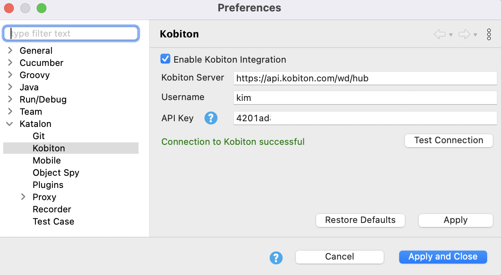
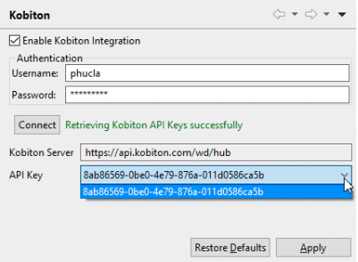

Enable Kobiton Integration
You have a Kobiton account.
You have installed Katalon Studio.
- Install the Kobiton Integration plugin from Katalon Store. After installing the plugin, open Katalon Studio, then select . You can refer to the section Reload Plugins for detailed instructions.
- Open Kobiton integration settings from the main menu:
Windows: ,
macOS: ,
- Select Enable Kobiton Integration and authenticate your access to the Kobiton Server. 
- From version 7.8.0 onwards: enter your Kobiton username or email, and Kobiton API Key, then select Test Connection.
- Kobiton Server: The Kobiton server to be integrated with Katalon Studio.Note:
From version 8.1.0 onwards, you can customize the remote server protocol and path name. Katalon Studio uses HTTP protocol by default. If your environment prevents sending basic authentication credentials through HTTP, you can input a remote URL with HTTPS instead.
API Key: The token to be used by Katalon Studio when exchanging API messages with Kobiton server. You can generate more keys in Kobiton API Settings.
Prior to version 7.8.0, enter your Kobiton account in the Authentication form and click Connect. Katalon Studio retrieves the information for Kobiton integration automatically. 
- When you are done with the configuration, select Apply and Close.